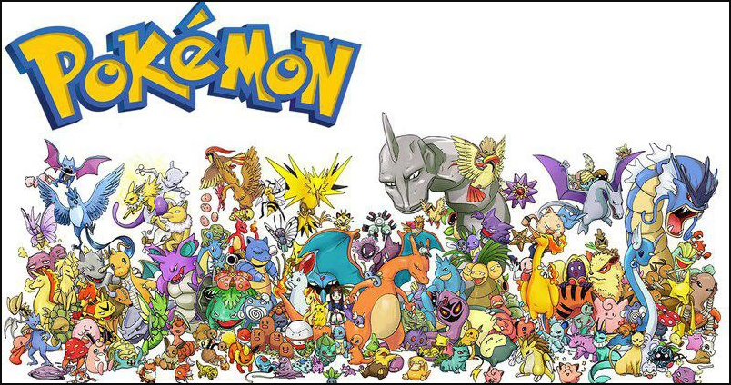

Visualisation des données sur les Pokémon
Fan des Pokemons ?
Vous Connaissez tous les pokemons et leurs categories ?
Regardez ce que nous avons trouvé pour vous en fonction des catégories et des meilleures notes de force.
Definition
Les Pokémon sont des créatures que l'on peut attraper et entraîner. Ils sont classés en différents types tels que:
-
Normal - Les Pokémon de type normal sont souvent des Pokémon de base qui ont peu d'affinités élémentaires.
-
 Combat - Les Pokémon de type combat sont souvent forts physiquement et
ont des attaques de type combat.
Combat - Les Pokémon de type combat sont souvent forts physiquement et
ont des attaques de type combat.
-
 Vol - Les Pokémon de type vol peuvent voler et ont souvent des
attaques aériennes.
Vol - Les Pokémon de type vol peuvent voler et ont souvent des
attaques aériennes.
-
Poison - Les Pokémon de type poison peuvent infliger des dégâts à leurs adversaires et ont souvent des attaques de type poison.
-
Sol - Les Pokémon de type sol sont souvent forts physiquement et ont des attaques de type sol.
-
Feu - Les Pokémon de type feu ont des attaques de type feu et sont souvent forts contre les Pokémon de type plante.
-
Eau - Les Pokémon de type eau ont des attaques de type eau et sont souvent forts contre les Pokémon de type feu.
-
Plante - Les Pokémon de type plante ont des attaques de type plante et sont souvent forts contre les Pokémon de type eau.
-
Électrik - Les Pokémon de type électrique ont des attaques de type électrique et sont souvent forts contre les Pokémon de type eau.
-
Psychique - Les Pokémon de type psychique ont des attaques de type psychique et sont souvent forts contre les Pokémon de type combat.
-
Glace - Les Pokémon de type glace ont des attaques de type glace et sont souvent forts contre les Pokémon de type dragon.
-
 Dragon - Les Pokémon de type dragon ont des attaques de type dragon et
sont souvent forts contre les Pokémon de type dragon.
Dragon - Les Pokémon de type dragon ont des attaques de type dragon et
sont souvent forts contre les Pokémon de type dragon.
-
Ténèbres - Les Pokémon de type ténèbres ont des attaques de type ténèbres et sont souvent forts contre les Pokémon de type psychique.
-
 Acier - Les Pokémon de type acier ont des attaques de type acier et
sont souvent forts contre les Pokémon de type dragon.
Acier - Les Pokémon de type acier ont des attaques de type acier et
sont souvent forts contre les Pokémon de type dragon.
-
Fée - Les Pokémon de type fée ont des attaques de type fée et sont souvent forts contre les Pokémon de type dragon.
Chacun de ces types de Pokémon ont des forces et des faiblesses spécifiques envers les autres types de Pokémon, qui influencent les combats entre eux. Il existe également des Pokémon qui ont plusieurs types. Au total, il existe plus de 800 espèces différentes de Pokémon, chacun ayant ses propres caractéristiques et capacités uniques. Les dresseurs peuvent attraper et collectionner autant de Pokémon qu'ils le souhaitent puis affronter d'autres dresseurs pour voir dont les Pokémon sont les plus forts. Il est important pour les dresseurs de connaître les types de leurs Pokémon pour pouvoir les utiliser efficacement dans les combats et les entraîner de manière optimale.
Description
Dans ce projet nous faisant une analyse comparatif entre les pokemons dominant selon leurs scores total pour proposer à la fin une selction des Top 10 selon défférent critéres: Hit Points, Attack, Defense, Special Attack, Special Defense, SpeedDataSet :
- #: ID for each pokemon
- Name: Name of each pokemon
- Type 1: Each pokemon has a type, this determines weakness/resistance to attacks
- Type 2: Some pokemon are dual type and have 2
- Total: sum of all stats that come after this, a general guide to how strong a pokemon...
- HP: hit points, or health, defines how much damage a pokemon can withstand before fainting
- Attack: the base modifier for normal attacks (eg. Scratch, Punch)
- Defense: the base damage resistance against normal attacks
- SP Atk: special attack, the base modifier for special attacks (e.g. fire blast, bubble beam)
- SP Def: the base damage resistance against special attacks
- Speed: determines which pokemon attacks first each round
Nettoyage des données

Nous avons eu besoin de nettoyer les données extraite sur kaggle pour correspondre a nos besoins d'étude
Pour cela nous avons :
- Supprimer les pokemon qui ont 0 de types2
- ajouter les images des pokemons
Difficultés rencontrées
Nous avons dû modifier les noms de certaines images pour qu'ils correspondent aux noms des Pokémon dans notre jeu de données principal afin de pouvoir mapper les deux bases de données et obtenir une visualisation claire.
Prototypes de visualisation utilisé
Nous avons utiliser D3js, D3plus, une bibliothèque javascript qui étend D3.js pour permettre des visualisations rapides, simple et représentatif.
- BubbleChart
- Radar
- PieChart
Membres de l'équipe
- AIT EL DJOUDI Karim
- HAIDAR Ali